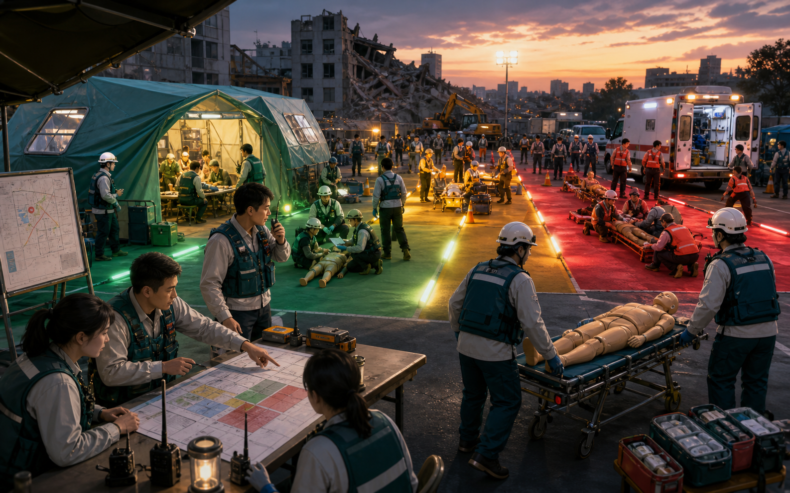

Trauma disaster medicine教学发布Teaching release
优先级Priorities资源状态Resources团队推演Team simulation
创伤急救与灾难医学总论Introduction to Trauma Resuscitation and Disaster Medicine
4 个学时串联创伤优先级、xABCDE、立即威胁、灾难资源失衡和综合推演，适合课堂授课与模拟前训练。Four lessons connect trauma priorities, xABCDE, immediate threats, disaster resource imbalance, and integrated simulation for classroom teaching and simulation preparation.
TRAUMA-ACADEMY-0054 Lessons180 Minutes教学版Teaching edition